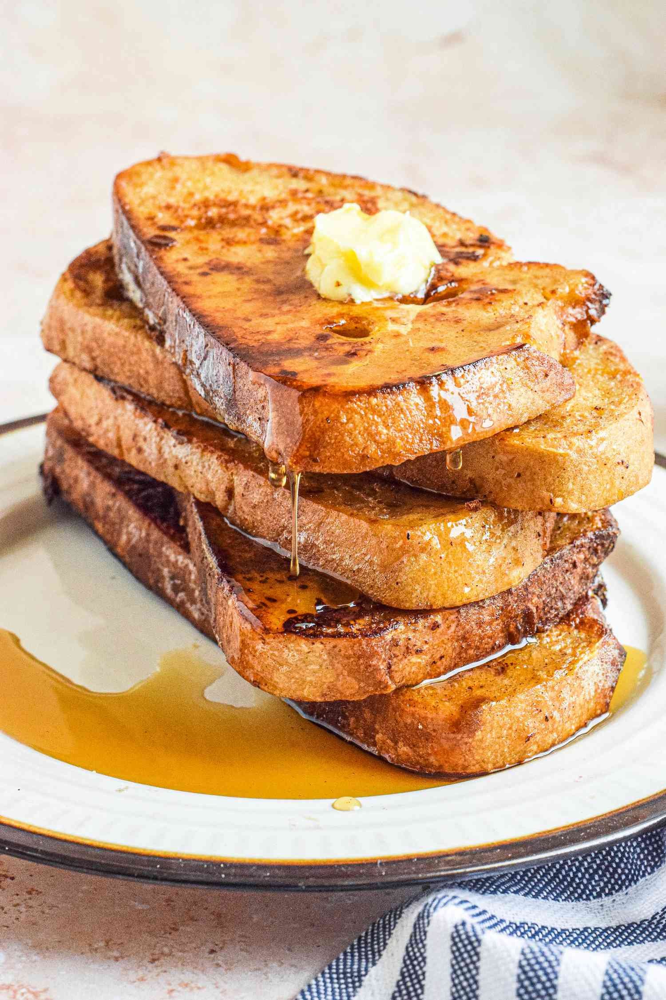

HOME
French Toast

This french toast is so perfect and sweet in the morning. Enjoy it with some coffee as you begin another day in paradise.
Ingredients:
- 4 Large Eggs
- 2/3 cup Milk
- 2 teaspoons Cinnamon
- 8 thick slices 2-day old Bread (best if slightly stale
- Butter
- Maple Syrup
- Powdered Sugar (optional)
- Fresh Berries (optional)
Preparation:
- Mix Eggs with Milk and Cinnamon.
- Fry French Toast until brown on both sides.
- Serve with butter and maple syrup. Add Fresh Fruit if you like.